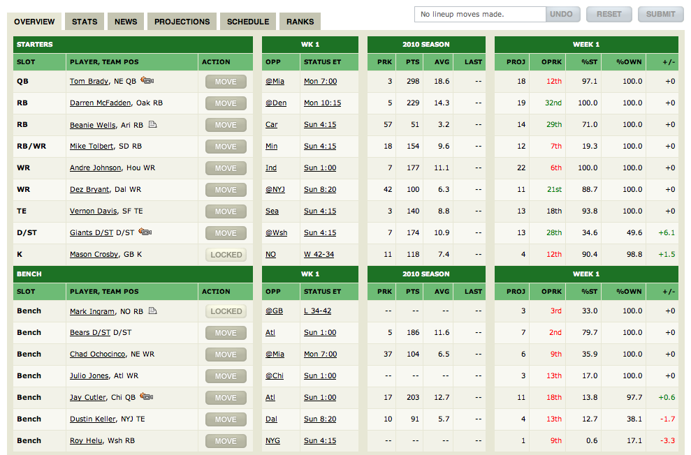

import pandas as pd
import requests
def read_new(year, pos):
# Link takes lowercase positions
pos = pos.lower()
url = f"https://www.fantasypros.com/nfl/stats/{pos}.php?year={year}"
response = requests.get(url)
html = response.content
# Make df
df = pd.read_html(html, header=1)[0]
# Clean name and team data
df.insert(1, 'Tm', df['Player'].str.rsplit(n=1).str[-1].str.slice(1, -1))
df['Player'] = df['Player'].str.rsplit(n=1).str[0]
# Get y (following year ppg)
next_year = str(int(year) + 1)
url = f"https://www.fantasypros.com/nfl/stats/{pos}.php?year={next_year}"
response = requests.get(url)
html = response.content
# Make df
y = pd.read_html(html, header=1)[0]
df['y'] = y['FPTS/G']
return dfAbstract
Our group attempted to create a model that would take in a football players statistics for one season and would output a projected fantasy score for the following year. We wanted to create a model that could be trained on several years worth of data and would choose the model that was best for that dataset. We wanted split up each major fantasy football position into its own model in case there was one model that was better for one position vs. another. We wound up scraping our data online so it will be easy in the future to add in years and incorporate them into our training data. We ultimately were successful in creating this setup and obtaining results that seem relatively accurate to us. We would like to compare our results vs. other prediction algorithms out there for predicting fantasy football performance at some point.
Introduction
Our project focused on developing a machine learning pipeline for fantasy football applications. All three of us have played fantasy football for a number of years, so we were motivated to see if modeling historic data could lead to accurate predictions for future seasons. For those who are unfamiliar, or need a refresher on what fantasy football is, here is a quick recap:
Fantasy Football
The primary goal of fantasy football is to select a fantasy team comprised of current NFL players. The standard roster includes one quarter back, two running backs, two wide receivers, one tight end, one kicker, one defensive/special teams unit, and one “flex,” which can be an additional running back, wide receiver, or tight end. There is also space for ~5-7 bench players whose points will not count if they remain on the bench. Here is an example roster:

Typically, a fantasy football league will consist of 8-12 teams, and participants will battle head to head against there friends to see whose collective team performs better that week. The league will have playoffs towards the end of the season and eventually a championship.
As you will see in the “Week 1” columns on the right, there is one feature named “Proj,” which stands for projections. These metrics are very popular and commonly utilized in fantasy football, and team managers will often use them to compare different players and set their lineup each week. Like many, we have always been curious how these projections are generated. There have been several individuals and groups who have also tried to accomplish this task. For example, Chelsea Robinson at Louisiana tech (Robinson 2020) wrote a case study in 2020 with her findings from advanced statistical modeling using historical fantasy data. Similar to us, she relied on regression modeling to output a ranking list for the following season. Although mathematically strong, her model uses less data and fewer features than ours, which might not produce as accurate as a result. Another interesting case study comes Roman Lutz at UMASS Amherst (Lutz 2015), who employed a similar solution as us. More specifically, he pulled data from over 5 seasons and used SVM regression along with neural networks for optimization. Similar to the first case study, his data was also fairly basic and lacked the advanced features found in ours. Consequently, his MSE was around 6, while ours was closer to 2. This is a significant error difference when it comes to prediction, so we are proud with our result. The last case study worth mentioning comes from Benjamin Hendricks at Harvard (Hendricks 2022). In his approach, Hendricks uses an ensemble method to reach predictions. In his calculations, he leverages data from existing models, applies natural language processing techniques to perform sentiment analysis on player performance, and combines these metrics with standard data from NFL.com and FantasyData.io. Hendricks’s use of sentiment analysis and crowd sourcing is a unique approach and feature to include. He relies on the crowd’s opinion on players and teams instead of just the “masters.” He also includes advanced, real time statistics such as injuries and weather analysis. This is an impressive, detailed approach with great performance (30% better than most sport sites).
Values Statement
Potential Users
The potential users of our project are fantasy football team owners. Our data, modeling, and output are all fairly specific, so there will not be many applications outside this domain. It is worth noting that our current output is specific to fantasy football drafts, which take place at the beginning of the year and allow users to pick their team for the year. If we had more time, we would have liked to model for weekly predictions.
Who benefits?
Hopefully, the owners of fantasy football teams who leverage our product will gain increased insight and an edge over their opponents. These users can run our model for that given year and shape their draft off the results.
Who is harmed?
While no one will be truly harmed, this algorithm could provide an unfair advantage for certain members of a league. The algorithm should not be used if any sort of wagering is involved in the league, as this could cause for unfair and biased outcomes.
What is your personal reason for working on this problem?
As aforementioned, we all have played fantasy football for a number of years and have been interested with how the projections are produced by major sites like ESPN and Yahoo. We wanted to see if we could replicate and expand on these predictions using the machine learning techniques we have explored this semester.
Societal Impact
There will be very little societal impact of our product. As we mentioned, it is a very specific application of machine learning, and it will primarily be used for fun instead of addressing any societal problems.
Materials and Methods
Our data
Normal data
We wound up scraping most of our data online from various websites that provide NFL player statistics. We tested various websites but the one with the most data that was easily available to scrape was from a website called FantasyPros. This website has cleanly formatted NFL data for every player from each year. They also conveniently split up the players into positional groups, which made our job easier. Furthermore, the url for each position and year was structred in such a way that we could write the following function to web-scrape our basic data:
This is what an example basic dataset looked like:
df = read_new(2021, "QB")
df.head(3)| Rank | Tm | Player | CMP | ATT | PCT | YDS | Y/A | TD | INT | SACKS | ATT.1 | YDS.1 | TD.1 | FL | G | FPTS | FPTS/G | ROST | y | |
|---|---|---|---|---|---|---|---|---|---|---|---|---|---|---|---|---|---|---|---|---|
| 0 | 1 | BUF | Josh Allen | 409 | 646 | 63.3 | 4407 | 6.8 | 36 | 15 | 26 | 122 | 763 | 6 | 3 | 17 | 417.7 | 24.6 | 99.9% | 25.2 |
| 1 | 2 | LAC | Justin Herbert | 443 | 672 | 65.9 | 5014 | 7.5 | 38 | 15 | 31 | 63 | 302 | 3 | 1 | 17 | 395.6 | 23.3 | 96.6% | 24.3 |
| 2 | 3 | FA | Tom Brady | 485 | 719 | 67.5 | 5316 | 7.4 | 43 | 12 | 22 | 28 | 81 | 2 | 3 | 17 | 386.7 | 22.7 | 1.8% | 25.6 |
As you can see, each row represents a singular NFL player. In this case, we pulled QB data from 2021, so each row will represent a quarterback and their respective stats from that season. There are many features which display player performance throughout the season. Some example stats include ATT (pass attempts), YDS (passing yards), TD (touchdowns), CMP (completions). Our target variable, which we are trying to predict in future years, is FPTS/G: This is what it looks like:
df['FPTS/G']0 24.6
1 23.3
2 22.7
3 22.0
4 20.4
...
78 -0.3
79 -0.1
80 -0.2
81 -0.5
82 -0.4
Name: FPTS/G, Length: 83, dtype: float64We decided on fantasy points per game instead of total fantasy points to account for injuries and other potential limitations of an aggregate value. For example, in our first modeling approach, when we used total fantasy points, some of the top players received extremely low predictions for the following season. One example was Saquon Barkley, who is a top running back in the league. One year, he only played in 2 games due to a season ending injury. However, in those two games, he averaged ~15 points per game. In this regard, although he recorded one of the lowest total points for that year, he was one of the best players.
Advanced Data
We also pulled advanced player data from the same website, which brings in some more advanced calculations into our dataset. While many of these metrics are important, they are often skipped by the mainstream media due to their complicated nature or low appeal for their audience. Because the two datasets came from the same website, we could use a similar approach for our web-scraping, and the merge was made easier due to matching names. One area which required a little massaging was ensuring we did not have duplicate variables. As you will see in our basic data, there are multiple Td, Yds, Att columns. This represents passing vs rushing statistics. As each position had slightly different data, it became important to us to invest time in cleaning / un-duplicating these features. Additionally, many columns were repeated in the merging process with the advanced dataset. To clean this data in an efficient and organized way, we wrote a bunch of functions in our main class file to help us tackle the problem.
We wound up training our model on every year except for the most recent. This allowed us to test our results against the most recent years worth of data. We evaluated our models based on MSE. If a model provided a better MSE than the model we had previously saved as the best, we would update and now return the new type of model. Our biggest hurdle was aquiring enough data to run an effective model as there are only 32 teams and some positions only have 1 that gets points. We had to take several years worth to help us overcome this challenge.
Our approach
Data collection
A big problem we faced was a lack of data. More specifically, we initially started with just one season of data to make our predictions. This quickly caused problems, as in some positional groups we were left with only ~30 players as observations after cleaning and preparing our data. Therefore, we switched our data source and layered ~10 seasons worth of data onto each positional group. We ended up removing player names as a feature, as this could have ended up being a feature due to repeated values over different years. This left us with hundreds of observations to work with.
Preprocessing
Before we employed our models, we performed feature selection and normalization techniques. First, because of our merged dataset, we had a copious amount of features to choose from. We relied on sklearn’s SelectKBest algorithm for most of the heavy lifting. Before this process, however, we made sure to standardize our data to ensure the feature selection algorithm did not favor features with naturally larger values. Here is our feature selection function:
from sklearn.feature_selection import SelectKBest, f_regression
def getBestFeatures(X, y, numFeatures = 5):
# Get best features
selector = SelectKBest(score_func=f_regression, k=numFeatures)
selector.fit(X, y)
selected_features = X.columns[selector.get_support()]
X_selected = X[selected_features]
return X_selected, selected_featuresFor each positional group, the 5 selected features were different and unique to that position. For example, 20+ yard receptions are much more important in predicting wide receiver performance than they are for quarterbacks, who pass the ball.
Modeling
Next, we performed our modeling. For each position, we tested 8 models on each positions training data and used the one that performed the best. These models included a Linear Regression model, a SGDRegressor model, a Ridge model, a Lasso model, a Decision Tree model, a Random Forest model, a SVR model, and a Multi-Layered Perceptron model. After training, this model was then returned to evaluate the validation data for each position. Once tested, our models were then used to predict fantasy scores for our testing data of the year 2021-2022.
Performance evaluation
In our model selection we used MSE as our metric to pick the best model for each position. The MSE for each position varied due to each position having a different average for score. For example, QB’s score the most amount of points in fantasy football whereas TE’s score the least amount of points (besides kickers and defense). In this way, the MSE for QB’s was naturally higher than that of TE’s and this trend was prominent for all positions.
Results
We were able to complete our goal of making projections for all fantasy players this upcoming season. Sadly, ESPN and other reputable fantasy football sites do not have their performance projections for previous years avaiable to use. Significantly, we wanted to compare our model’s performance against highly used fantasy football projections. Because we were not able to compare our model to other models, it is hard to see whether our model truly performed well. However, we visualized our final testing data for the 2022 year and compared our models projections to the players actual performance. In our pandas tables shown in our source code, it is apparent that our model did a sufficient job at predicting the performance of many players. We were also able to get the average difference between our projection and the players actual performance in 2022. This was a clear sign to us that the model was performing well because for our rookie WR’s, our projections were on average less than 2 points off, QB’s were on average about 6 points off, TE’s were on average less than 1.5 points off, and RB’s were on average about 3 points off. In the context of fantasy football, for players that have no previous data in the league, our model is able to give us reasonably accurate projections that many of these big sites often get wrong.
Concluding Discussion
We were very happy with the results of our project. We set out to create a model that would allow us to predict fantasy football performance in the future and we were able to accomplish just that. Because of the way we set up our code and the way we scrape data and train our model, it will be very easy to alter our code in future years and allows us to predict future results. We unfortunately have not had time to compare our model with those of major fantasy football platforms, but we are happy enough with our results that we are all comfortable taking our work and applying it to our own fantasy football leagues. If we had time, we would try to add in even more features to train on and we would also add in more ways to test the effectiveness of our model. Overall, we are really happy with what we were able to put out and look forward to continuing work in the future.
Group Contributions Statement
Ethan Coomber:
I spent a lot of time working on cleaning data and developing the model. We had to make sure we had sufficient data and I tried to ensure we had clean, usable data. Once I was able to ensure that, I spent my time working on developing a way to choose the best model. This took time as we had to research various models and determine what kind of model would be most effective in helping us predict performance. We then implemented the models we thought had potential and had to have a way to select the best one.
Johnny Kantaros:
I spent time initially working on data collection (including the web-scraping), and then spent a lot of time on data cleaning and preprocessing tactics. A large portion of this project was data collection, manipulation, and wrangling, and I definitely learned a lot about the various functionalities of Pandas and other frameworks. Finally, I helped Ethan with adding some models to our modeling function. Our team did a great job working collaboratively so everyone achieved learning in all parts of the pipeline. In terms of this blog post, I wrote the introduction, values statements, and part of the materials + methods sections.
Dean Smith:
I spent most of my time focusing on the rookie data. A big part of this project was how we would predict scores for rookies who have had no prior data in the league. We concluded that using draft data and team data from the year prior would be the best way to estimate how a rookie would be utilized by their team. Once I gathered and cleaned the data for rookies, my time was spent developing the funciton for feature selection along with integrating the Multi-Layered Perceptron into the model selection. For the blog post, I took charge in writing the Modeling, Performance Evaluation, and Results sections of the blog post.
Personal Reflection
From this project, I learned a valuable combination of both technical and soft skills. Before this semester, I have never worked collaboratively on large scale software projects. Through this process, I learned a lot about the necessary communication and teamwork required to build a functional machine learning project. More specifically, our team used many aspects of Git + Github to manage our workflow. I have used Github in very basic settings before, but I definitely learned a lot more about the various features and tools it has to offer. Additionally, I learned the value of avoiding extreme specialization when working as a group. Our group did a great job in splitting the work so that everyone worked on every part of the pipeline. As a result, we are all well versed in every part of our project and can quickly adapt to working on new components.
On the technical side, I learned a lot about various data collection techniques including web scraping, requests, the beautiful soup package, and advanced pandas techniques. I learned how to merge and append data frames, and the various preprocessing techniques required for successful machine learning. Additionally, we explored a number of different regression algorithms, many of which were new to me. Although we have done model selection in the penguins blog post, I expanded my practice with model selection and validation approaches.
I am very proud with my achievements. I truly learned a lot about the entire data science/machine learning pipeline, and I got great experience working/leading a team. While not perfect, our final product achieves a good accuracy and is functional in its nature. Our model is good enough that I will be using it in my upcoming draft next fall. Through hard work and a lot of time, I met all of my initial goals.
Moving forward, I will carry the teamwork values I developed in this process. I will make sure to be fantastic with my communication and coordination (because it makes a big difference), and I will do my best to be the best teammate I can. I will also carry with me the workflow we employed. More specifically, our team did a great job breaking up the project into small parts and planning our goals well. This enabled us to tackle the project step by step and develop a great final product. Finally, I will take the model selection process with me into future jobs and projects. We optimized our project with an extensive list of potential regression models, and this enabled each position to use the model that was best for themselves. Overall, I am very proud of this project and it was a pleasure to work with Ethan and Dean!
References
Hendricks, Benjamin. 2022. “Sports Analytics with Natural Language Processing: Using Crowd Sentiment to Help Pick Winners in Fantasy Football.” Harvard University.
Lutz, Roman. 2015. “Fantasy Football Prediction.” arXiv:1505.06918v1.
Robinson, Chelsea. 2020. “The Prediction of Fantasy Football.” Louisiana Tech University.